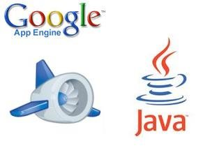
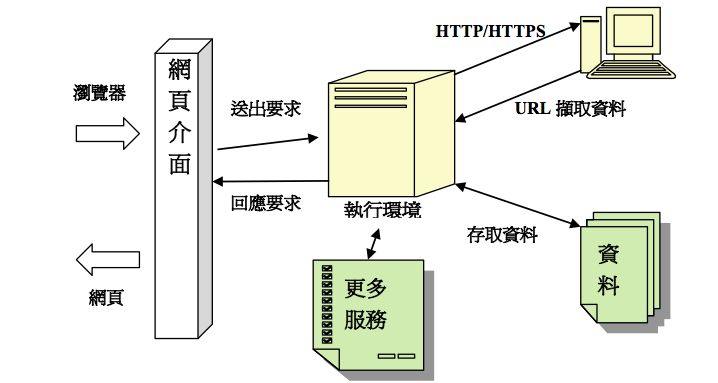

您還在煩惱雲端服務要如何建置嗎？
軟體即服務（SaaS）,
平台即服務（PaaS）,
基礎設施即服務（IaaS）
您懂這麼多專有名詞嗎？
何種服務最適合您的需求呢？
為您開啟雲端服務的大門
如果您還在猶豫如何建構雲端服務,時間不會停留,商機稍縱即逝,波峰軟體有10多年的web應用程式開發經驗,為台灣最早投入 雲端軟體的開發商之一,並成功在GAE上運行商用軟體,請讓我們為您規劃低成本及高效能的雲端服務。
什麼是 Web 應用程式
什麼是一個 Web 應用程式 (Web Application)? 簡單地說就是一個提供特定服務能夠讓使用者在 Internet 或者 intranet 透過瀏覽器來讀取、互動的應用程式。更明確地來說,開發人員利用瀏覽器所支援的語言 (例如. HTML、Java Script、Java、 PHP 等等) 來開發的一個應用程式,且能夠透過瀏覽器來產生執行結果, 即稱之為一個 Web 應用程式。 傳統的Web網頁能夠提供使用者瀏覽大量的文字或者圖片資料。 然而隨著越來越多的網頁技術推陳出新,以及 Web 2.0 時代的來臨, Web 網頁所扮演的資訊提供者 (provider)已經不足以滿足使用者的需求;使用者需要的是能夠與其『互動』的網頁 而不僅僅只是靜態的網頁呈現。因此,越來越多開發人員投入 Web 應用程式開發的領域,不管是底層基礎架構 (framework) 的設計、後端網頁程式設計甚至到了前端互動技術(例如. AJAX, Asynchronous JavaScript and XML);各大軟體公司也 都針對 Web 應用程式平台由上到下 (Top-Down) 提供完整的解決方案,來協助技術人員更快速地開發 Web 應用程式。
如何建置Web應用程式
自行建置：
需伺服器的硬體及所需之網路設備,另需備援系統來維持不中斷的服務。
安裝作業系統及資料庫,依授權使用節點數或者資料庫內容數量來計費。
網路安全﹣防火牆系統的建立也是非常必要的。
不然輕則網頁被修改、重則全部資料都外洩或混損,對於企業網站來說都是非常大的傷害。
自行建置必須花費非常多的時間與人力在系統的建置與維護上,還需要考慮到擴充性以及系統配置的問題,這些問題都是非常令人頭痛的。
委外使用虛擬伺服器:
很多虛擬伺服器廠商能夠提供非常完整的且全日的安全機制,另有額外的電源備援機制來提供不停機的持續性服務;
但您也需要更多的經費來支援您!
如果只是想要建置一個小型Web應用程式的功能也得付出這麼大的成本嗎?
難道沒有又便宜又穩定,且支援度高的Web應用程式開發環境供開發人員來開發、
部署且又有資料庫資源能夠來存取並搜尋呢?
google app engine
Google App Engine 是由 Google 所提供的雲端服務,它可以讓開發者將自己所寫的 網頁、服務等放到他們的伺服器上,
讓使用者透過他們的伺服器來使用。此種方式不 需要開發者自行購買硬體設備也不需要維護整個服務,只需要到 Google 的使用者管理
介面裡觀看是否異常並調整繳費等項目即可。
Google App Engine 的入門門檻也很低,它有提供免費的版本,使用者可以先試著 使用此種服務,不需支付費用,即使正式開始使用,
只要不超過出限定範圍也不需要 付出任何費用。並且提供有 1GB 的儲存空間、5GB 的檔案儲存空間、每月 500 萬次網 頁瀏覽次數、
受到限制的網路頻寬等等方案。
除了免費的部份,Google 也有推出「用多少付多少」的付費服務。如下圖：



波峰使用全世界最通用的JAVA語言配合GAE來建置J2EE架構的商業服務系統,是完美的組合，俱有以下優勢：